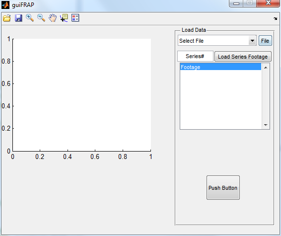

function varargout = guiFRAP(varargin) % GUIFRAP MATLAB code for guiFRAP.fig % GUIFRAP, by itself, creates a new GUIFRAP or raises the existing % singleton*. % % H = GUIFRAP returns the handle to a new GUIFRAP or the handle to % the existing singleton*. % % GUIFRAP('CALLBACK',hObject,eventData,handles,...) calls the local % function named CALLBACK in GUIFRAP.M with the given input arguments. % % GUIFRAP('Property','Value',...) creates a new GUIFRAP or raises the % existing singleton*. Starting from the left, property value pairs are % applied to the GUI before guiFRAP_OpeningFcn gets called. An % unrecognized property name or invalid value makes property application % stop. All inputs are passed to guiFRAP_OpeningFcn via varargin. % % *See GUI Options on GUIDE's Tools menu. Choose "GUI allows only one % instance to run (singleton)". % % See also: GUIDE, GUIDATA, GUIHANDLES % Edit the above text to modify the response to help guiFRAP % Last Modified by GUIDE v2.5 29-Jul-2014 15:34:00 % Begin initialization code - DO NOT EDIT gui_Singleton = 1; gui_State = struct('gui_Name', mfilename, ... 'gui_Singleton', gui_Singleton, ... 'gui_OpeningFcn', @guiFRAP_OpeningFcn, ... 'gui_OutputFcn', @guiFRAP_OutputFcn, ... 'gui_LayoutFcn', [] , ... 'gui_Callback', []); if nargin && ischar(varargin{1}) gui_State.gui_Callback = str2func(varargin{1}); end if nargout [varargout{1:nargout}] = gui_mainfcn(gui_State, varargin{:}); else gui_mainfcn(gui_State, varargin{:}); end % End initialization code - DO NOT EDIT % --- Executes just before guiFRAP is made visible. function guiFRAP_OpeningFcn(hObject, eventdata, handles, varargin) % This function has no output args, see OutputFcn. % hObject handle to figure % eventdata reserved - to be defined in a future version of MATLAB % handles structure with handles and user data (see GUIDATA) % varargin command line arguments to guiFRAP (see VARARGIN) handles.seriesNum = 1; % sets the defualt series to be collected to #1 % handles.select_Footage = {'Footage'}; % Choose default command line output for guiFRAP handles.output = hObject; % Update handles structure guidata(hObject, handles); % UIWAIT makes guiFRAP wait for user response (see UIRESUME) % uiwait(handles.gui_FRAP); % --- Outputs from this function are returned to the command line. function varargout = guiFRAP_OutputFcn(hObject, eventdata, handles) % varargout cell array for returning output args (see VARARGOUT); % hObject handle to figure % eventdata reserved - to be defined in a future version of MATLAB % handles structure with handles and user data (see GUIDATA) % Get default command line output from handles structure varargout{1} = handles.output; % --- Executes on button press in get_File. function get_File_Callback(hObject, eventdata, handles) % hObject handle to get_File (see GCBO) % eventdata reserved - to be defined in a future version of MATLAB % handles structure with handles and user data (see GUIDATA) [fileName,filePath] = uigetfile('*'); currentFiles = cellstr(get(handles.select_File, 'String')); currentFiles{end+1} = strcat(filePath,fileName); set(handles.select_File, 'String', currentFiles); handles.file = strcat(filePath,fileName); set(handles.select_File, 'Value', length(currentFiles)); % Update handles structure guidata(hObject, handles); % --- Executes during object creation, after setting all properties. function select_File_CreateFcn(hObject, eventdata, handles) % hObject handle to select_File (see GCBO) % eventdata reserved - to be defined in a future version of MATLAB % handles empty - handles not created until after all CreateFcns called % Hint: popupmenu controls usually have a white background on Windows. % See ISPC and COMPUTER. if ispc && isequal(get(hObject,'BackgroundColor'), get(0,'defaultUicontrolBackgroundColor')) set(hObject,'BackgroundColor','white'); end % --- Executes on selection change in select_File. function select_File_Callback(hObject, eventdata, handles) % hObject handle to select_File (see GCBO) % eventdata reserved - to be defined in a future version of MATLAB % handles structure with handles and user data (see GUIDATA) % Hints: contents = cellstr(get(hObject,'String')) returns select_File contents as cell array % contents{get(hObject,'Value')} returns selected item from select_File fileString = cellstr(get(hObject,'String')); handles.file = fileString{get(hObject,'Value')}; % --- Executes during object creation, after setting all properties. function series_Num_CreateFcn(hObject, eventdata, handles) % hObject handle to series_Num (see GCBO) % eventdata reserved - to be defined in a future version of MATLAB % handles empty - handles not created until after all CreateFcns called % Hint: edit controls usually have a white background on Windows. % See ISPC and COMPUTER. if ispc && isequal(get(hObject,'BackgroundColor'), get(0,'defaultUicontrolBackgroundColor')) set(hObject,'BackgroundColor','white'); end % --- Executes on text change in select_File. function series_Num_Callback(hObject, eventdata, handles) % hObject handle to series_Num (see GCBO) % eventdata reserved - to be defined in a future version of MATLAB % handles structure with handles and user data (see GUIDATA) % Hints: get(hObject,'String') returns contents of series_Num as text % str2double(get(hObject,'String')) returns contents of series_Num as a double handles.seriesNum = str2double(get(hObject,'String')); % Update handles structure guidata(hObject, handles); % --- Executes on key press with focus on series_Num and none of its controls. function series_Num_KeyPressFcn(hObject, eventdata, handles) % hObject handle to series_Num (see GCBO) % eventdata structure with the following fields (see UICONTROL) % Key: name of the key that was pressed, in lower case % Character: character interpretation of the key(s) that was pressed % Modifier: name(s) of the modifier key(s) (i.e., control, shift) pressed % handles structure with handles and user data (see GUIDATA) get(handles.series_Num,'String') series_Num_Callback(hObject, eventdata, handles); set(handles.series_Num,'Value',str2double(get(handles.series_Num,'String'))); % set(handles.file,'Value',str2double(get(handles.file,'String'))); % set(handles.series_Num,'Value',str2double(get(handles.series_Num,'String'))); if strcmp(eventdata.Key, 'return') load_Series_Callback(hObject, eventdata, handles); end % --- Executes on button press in load_Series. function load_Series_Callback(hObject, eventdata, handles) % hObject handle to load_Series (see GCBO) % eventdata reserved - to be defined in a future version of MATLAB % handles structure with handles and user data (see GUIDATA) if ~isnumeric(handles.seriesNum) || isnan(handles.seriesNum) handles.seriesNum = 1; % sets the defualt series to be collected to #1 end % generate footage handles.footage = getFootage(handles.file, handles.seriesNum); % set the title for footage series [~, fileName] = fileparts(handles.file); %takes care of ID'ing the file type % handles.select_Footage{end+1} = strcat(fileName, ' : ', num2str(handles.seriesNum)); currentFootage = cellstr(get(handles.select_Footage, 'String')); currentFootage{end+1} = strcat(fileName, ' : ', num2str(handles.seriesNum)); set(handles.select_Footage, 'String', currentFootage); set(handles.select_Footage, 'Value', length(currentFootage)); % Update handles structure guidata(hObject, handles); % --- Executes during object creation, after setting all properties. function select_Footage_CreateFcn(hObject, eventdata, handles) % hObject handle to select_Footage (see GCBO) % eventdata reserved - to be defined in a future version of MATLAB % handles empty - handles not created until after all CreateFcns called % Hint: listbox controls usually have a white background on Windows. % See ISPC and COMPUTER. if ispc && isequal(get(hObject,'BackgroundColor'), get(0,'defaultUicontrolBackgroundColor')) set(hObject,'BackgroundColor','white'); end % --- Executes on selection change in select_Footage. function select_Footage_Callback(hObject, eventdata, handles) % hObject handle to select_Footage (see GCBO) % eventdata reserved - to be defined in a future version of MATLAB % handles structure with handles and user data (see GUIDATA) % Hints: contents = cellstr(get(hObject,'String')) returns select_Footage contents as cell array % contents{get(hObject,'Value')} returns selected item from select_Footage % --- Executes on button press in pushbutton3. function pushbutton3_Callback(hObject, eventdata, handles) % hObject handle to pushbutton3 (see GCBO) % eventdata reserved - to be defined in a future version of MATLAB % handles structure with handles and user data (see GUIDATA)